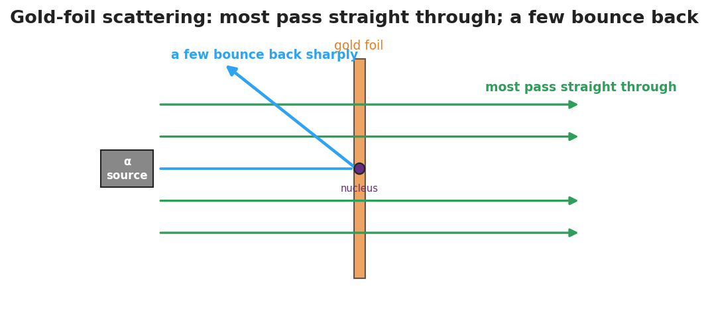

Unit: Modern Physics — Lesson 02: Models of the Atom
Phenomenon
Scientists fired tiny positive "bullets" (alpha particles) at an ultra-thin sheet of gold. They expected all of them to sail straight through a soft "pudding" of charge. Almost all did — but a tiny fraction bounced straight back, as if they had hit something small and hard. Rutherford said it was "as if you fired a 15-inch shell at a piece of tissue paper and it came back and hit you."

Driving Question
What does the gold-foil result tell us about what is inside an atom — and why did the atomic model keep changing?
Notice & Wonder
Most bullets pass through; a few bounce hard. Write two things you notice and two things you wonder.
Initial Model
Draw what you think the inside of a gold atom looks like, based on the scattering result. Mark where the "hard" part is and how much of the atom is empty.
Investigate
Step through the history of the atomic model. At each step the picture is redrawn, and you can read the evidence that supported it — and the new evidence that broke it and forced the next model.
Dalton (1803)
A model is the best picture that fits the evidence of its time.
Evidence that supported it:
Evidence that broke it:
Make It Make Sense
- Why couldn't Thomson's plum-pudding model explain the alpha particles that bounced straight back?
- The atom is mostly empty space, yet nearly all its mass sits in one tiny spot. Where is that mass, and what is that spot called?
- Is the quantum (electron-cloud) model "the final truth," or could it change? Explain.
Stuck? Sentence frame
"The ___ model changed to the ___ model because of evidence from ___."
Key Vocabulary (max 3)
- nucleus — the tiny, dense, positively charged center of an atom; it holds nearly all the atom's mass
- electron — a light, negatively charged particle found in the space around the nucleus
- atomic model — a scientific picture of the atom's structure, revised as new evidence appears
Revise Your Model
Return to your Initial Model. Redraw the gold atom using the words nucleus and electron, with the correct proportions (tiny dense center, lots of empty space).
Return to the Phenomenon
In one sentence, explain the gold-foil result using nucleus. (Target: "Most alphas pass through the empty space, but the few that hit the tiny dense nucleus are pushed sharply back.")
Exit Ticket + Closing Reflection
- (a) Which atomic model first included a tiny, dense nucleus, and what experiment supported it? (b) Name one thing the Thomson (plum-pudding) model got right. (c) Why do scientists change a model like the atom over time?
- Reflection: Whose idea in your group helped you make sense of the timeline today?